Hello, I'm Clementine 🍊
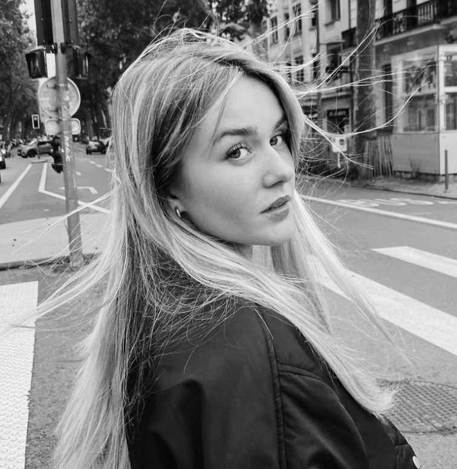My name is Clementine Casanova, but most often we call me Clem or Clecle. I am currently in 1st year at IESEG Business School. I love animals, and especially our friends the cats. Afterwards I am also passionate about vintage fashion, sewing and drawing.
Draw Something ✎Animals 𓃮
I love animals, and I’m lucky enough to be able to share my daily life with them.
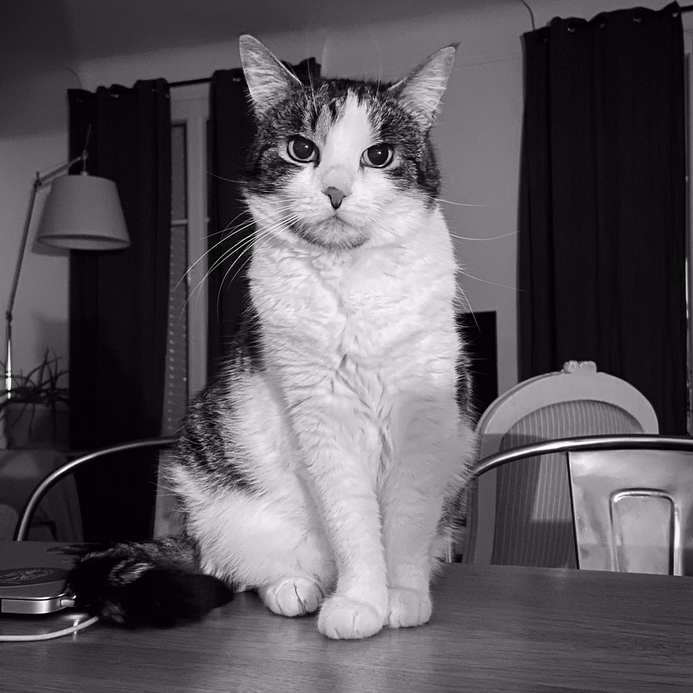
 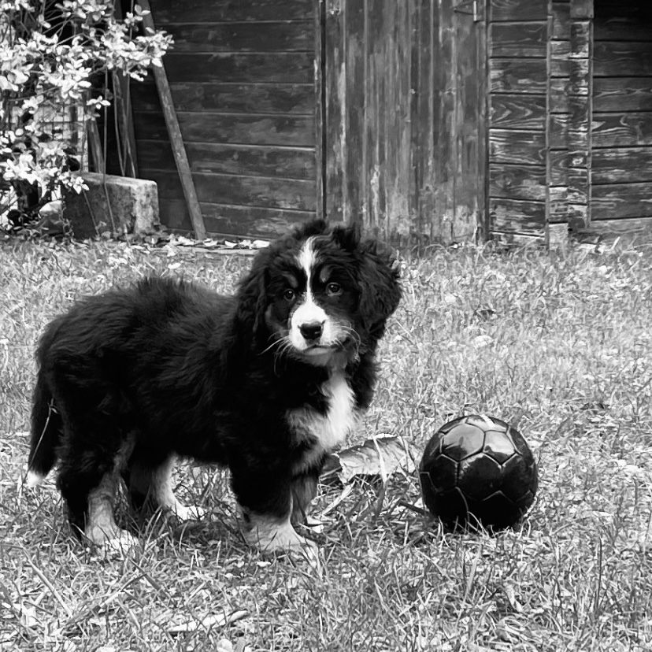
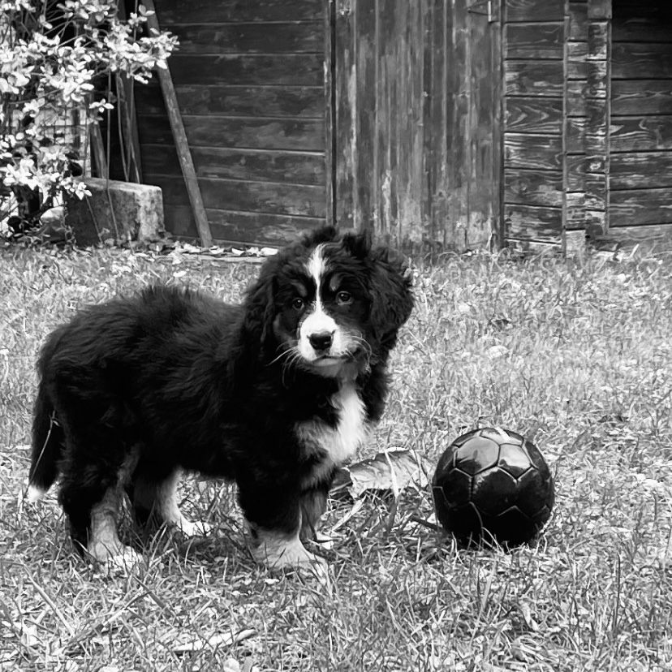
Vintage Fashion and Sewing ☆
Clothes go through the ages, and I love being able to give them a second life. Sewing and fashion are two disciplines that fascinate me.
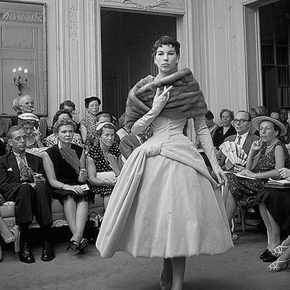 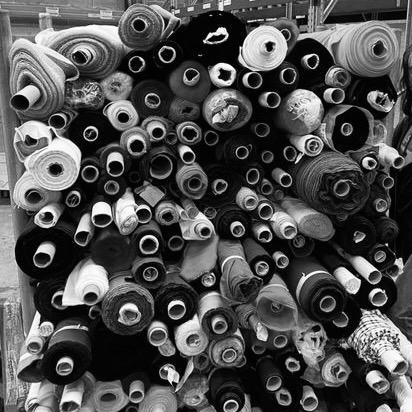 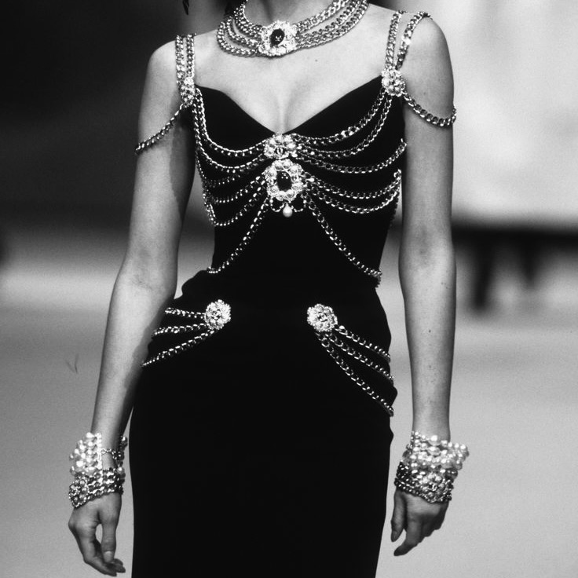 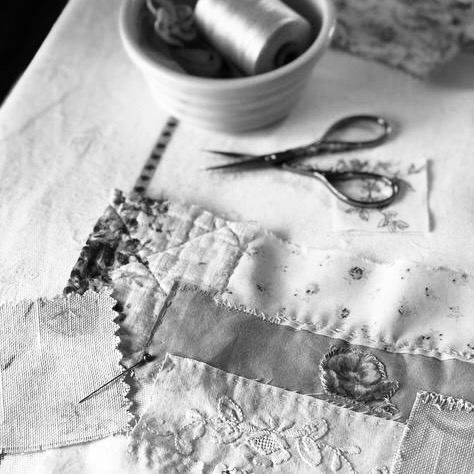Drawing ✐
It was through the animated films of Studio Ghibli that I decided to start drawing because nothing is impossible when you draw.
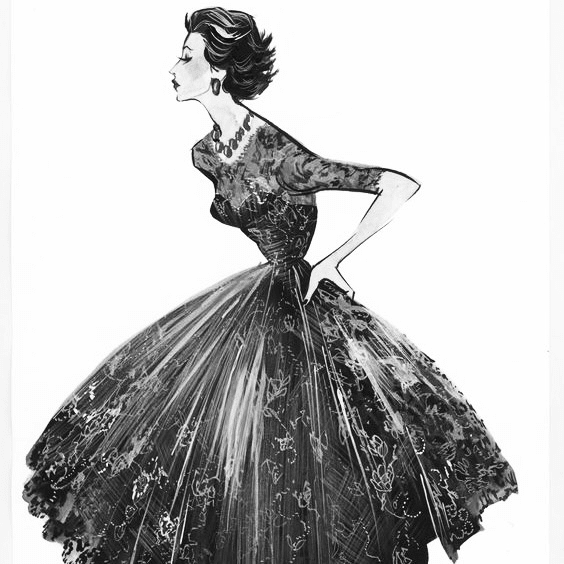 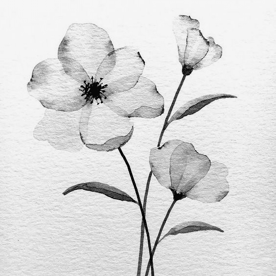 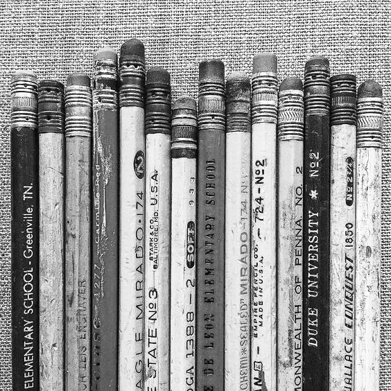 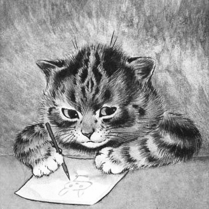